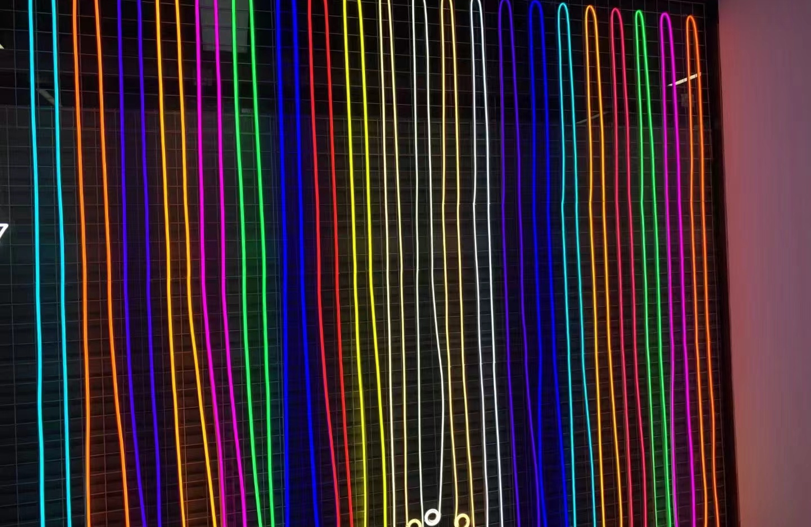
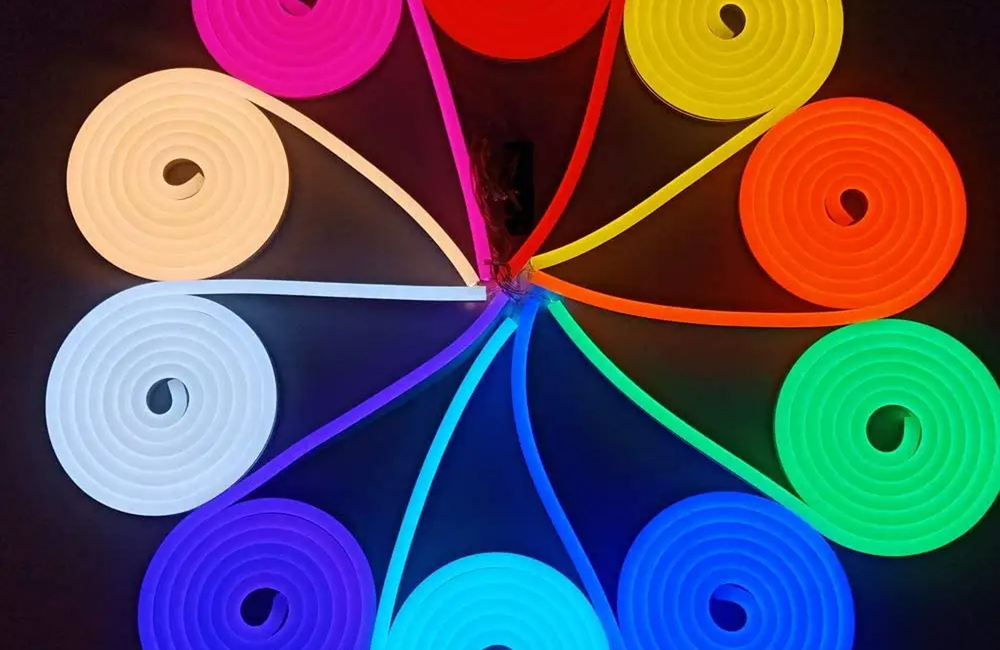
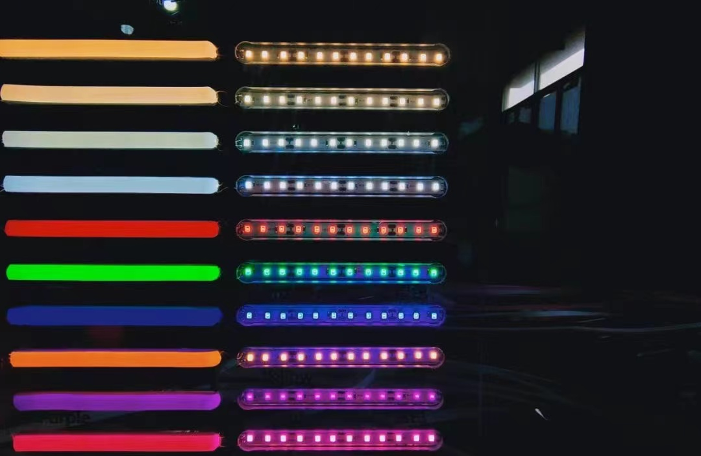
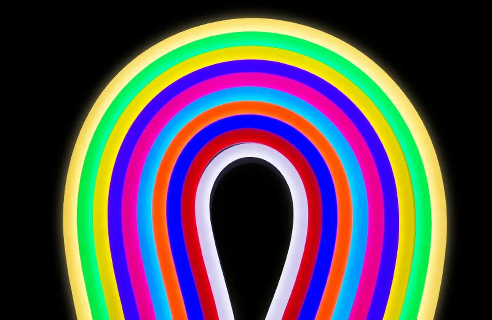

Neon RGB para fachada
Linha colorida aparente para contorno de marca, letreiro e fachada comercial.
RGBfachadacontrole
Consultar especificação

Neon Flex • RGB
Fita LED Neon RGB para projetos em que a linha de luz faz parte da identidade visual: fachadas comerciais, vitrines, bares, eventos, displays e comunicação arquitetural. O foco para B2B é especificar tensão, controle, comprimento por zona, fonte e proteção para operação estável em projeto.
Mapa técnico
Referência estrutural: páginas de categoria da Flexfire com filtros por tipo, uso e especificação. Adaptação: linguagem de projeto, cotação, lote e documentação técnica para clientes B2B no Brasil.
Modelos e aplicações
Cluster principal: fita led neon rgb. Termos de apoio: fita de led neon rgb, fita neon rgb, neon flex rgb, fita led neon colorida.

Linha colorida aparente para contorno de marca, letreiro e fachada comercial.

Cenas de cor para campanhas, visual merchandising e displays temporários.

Aplicações sob medida para curvas, painéis, eventos e ambientes de experiência.

Guia B2B
A página segue a lógica de categorias técnicas da Flexfire: primeiro organizar por aplicação e efeito, depois orientar a especificação. Em projetos B2B, Neon RGB não deve ser tratado como decoração avulsa. O projetista precisa definir trecho por zona, método de controle, tensão, potência, fonte, ponto de manutenção e nível de exposição. Em vitrines, é comum combinar RGB para atmosfera com luz branca para leitura real do produto.
Aplicações comerciais
As aplicações ajudam o time comercial a qualificar o lead por ambiente, nível de exposição e necessidade de controle.
Linhas coloridas para identidade visual e campanhas.
Planejar aplicaçãoCenas RGB com troca sazonal sem alterar marcenaria.
Planejar aplicaçãoBares, hotéis e áreas de experiência com controle de ambiente.
Planejar aplicaçãoFAQ técnico
Respostas orientadas para integradores, distribuidores, arquitetos e clientes de projeto.
Sim. Projetos RGB exigem controlador compatível com tensão, potência, zonas e tipo de efeito desejado.
Serve para atmosfera e campanha. Para leitura fiel de produto, combine com luz branca técnica.
Depende do modelo e do comprimento. Em projetos maiores, 24V costuma facilitar o planejamento de alimentação.
Envie metragem, desenho do percurso, tensão desejada, ambiente de uso, proteção IP e controle esperado.
Cotação B2B
Para retorno técnico, envie metragem, cor, tensão, proteção IP, ambiente de instalação, desenho do percurso e quantidade estimada por lote.